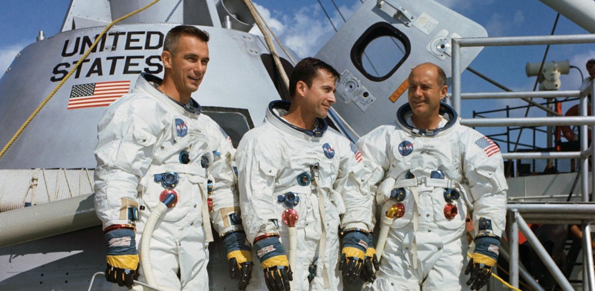

Apollo 10, launched on May 18, 1969, served as a vital rehearsal for the upcoming Apollo 11 mission, testing all aspects of lunar landing except the actual touchdown. The crew, consisting of Commander Thomas P. Stafford, Command Module Pilot John W. Young, and Lunar Module Pilot Eugene A. Cernan, conducted a lunar module descent, coming within 50,000 feet of the lunar surface. The lunar module, named "Snoopy," successfully redocked with the command module, "Charlie Brown," before returning to Earth.
The mission lasted a total of 8 days, 3 minutes, and 23 seconds
